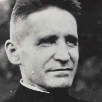
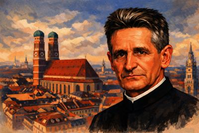

Isusovački blaženici
Svećenik
Bl. Ruperto Mayer
1876. – 1945.
Rupert Mayer pomagao je siromašnima u Münchenu i pratio vojnike kao kapelan. Javno protivljenje nacizmu donijelo mu je zatvore, logor i prisilnu izolaciju.
Tekst je preveden i prilagođen uz pomoć umjetne inteligencije.

Izvor slike


Izvor slike
- Spomendan
- 3. studenoga
- Zaštitništvo
- Nije navedeno u izvoru
- Životni vijek
- 1876. – 1945.
- Djelovanje
- Euharistija i pobožnosti · Siromašni i isključeni · Progoni i progonstvo
- Razdoblje
- 19., 20. stoljeće
- Datum rođenja
- 23.01.1876.
- Mjesto rođenja
- Stuttgart, Njemačka
- Datum smrti
- 01.11.1945.
- Mjesto smrti/mučeništva
- Crkva sv. Mihaela, München, Njemačka
- Okolnosti smrti/mučeništva
- Doživio srčani udar tijekom mise i ubrzo umro.
- Uloga
- Svećenik
- Mučenik
- Ne
- Ostale oznake
- Apostol u Münchenu (Njemačka); Vojni kapelan; dušobrižnik muškaraca; protivnik nacizma
- Pripadnost
- Isusovac
- Drugi oblici imena
- Rupert Mayer · Rupert
Životopis
Rupert Mayer rođen je 23. siječnja 1876. u Stuttgartu. Želio je postati isusovac, ali je prihvatio očev savjet da najprije završi studije i bude zaređen. Filozofiju je učio u Fribourgu i Münchenu, a teologiju u Tübingenu. Zaređen 1899., godinu je dana služio u župi, pa 1. listopada 1900. stupio u novicijat u Feldkirchu. Kao pučki misionar od 1906. do 1911. obilazio je Njemačku, Švicarsku i Nizozemsku.
Od 1912. u Münchenu je pomagao doseljenicima naći hranu, posao i smještaj. Prvi svjetski rat odveo ga je u vojni pastoral u Francuskoj, Poljskoj i Rumunjskoj. Hrabrost uz vojnike donijela mu je 1915. Željezni križ, a teško ranjavanje 1916. gubitak lijeve noge. Po povratku nastavio je socijalni apostolat. Od 1921. vodio je Marijansku mušku kongregaciju, koja je narasla na više od sedam tisuća članova; od 1925. putnicima je omogućavao nedjeljnu misu na glavnom kolodvoru, prvu već u tri ujutro.
Rano je prepoznao nespojivost nacizma s kršćanskim uvjerenjem. Kad je režim napadao škole i redovničke zajednice, branio ih je s propovjedaonice svetoga Mihaela. Nakon zabrane javnoga govora 1937. nastavio je propovijedati u crkvi. Slijedila su ponovljena uhićenja i zatvor, a 1939. koncentracijski logor Sachsenhausen. Zbog teško narušenoga zdravlja premješten je u opatiju Ettal, gdje je ostao prisilno izoliran.
Nakon oslobođenja u svibnju 1945. vratio se münchenskom pastoralnom apostolatu. Umro je na Sve svete iste godine tijekom mise. Najprije je pokopan u Pullachu, a 1948. njegovi su ostatci preneseni u kriptu Bürgersaalkirche. Ivan Pavao II. proglasio ga je blaženim 3. svibnja 1987. na münchenskom Olimpijskom stadionu.
Tekst je preveden i prilagođen uz pomoć umjetne inteligencije.
Pročitaj više na izvornoj stranici ↗